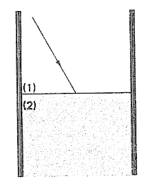
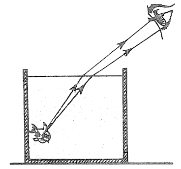
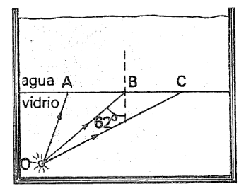
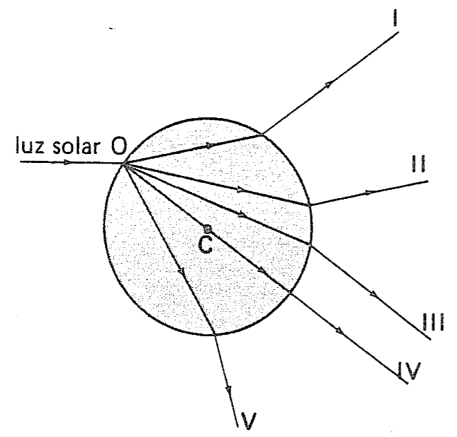
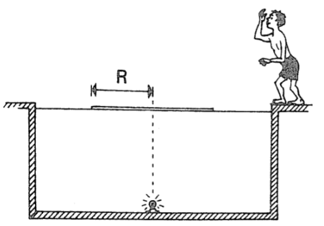
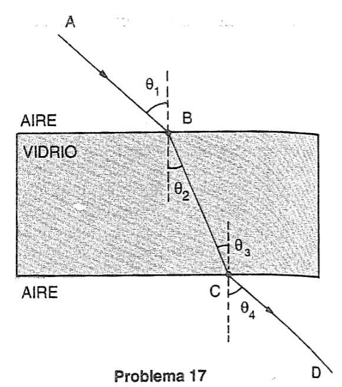
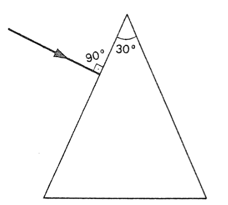

Ejercicios conceptuales y problemas de aplicación sobre refracción, reflexión interna total, ángulo límite e imágenes producidas por superficies refringentes.
Observe los valores de los índices de refracción de la Tabla 16-1. ¿En cuál de los medios que allí se mencionan se propaga la luz:
con mayor velocidad?
con menor velocidad?
La figura de este ejercicio muestra un rayo luminoso que incide en la superficie de separación de dos medios (1) y (2). Muestre en la figura la dirección aproximada del rayo refractado suponiendo que:
n2 > n1
n2 < n1

Un pequeño pez se encuentra dentro de un acuario. La figura de este ejercicio muestra rayos luminosos que parten del pez y se refractan al pasar del agua hacia el aire.
Muestre, en la figura, dónde está situada la imagen del pez que ve el observador.
Esta imagen, ¿es real o virtual? Explique.
Si el observador deseara atrapar al pececillo con un arpón, ¿deberá dirigir el arma hacia un punto situado arriba o abajo de la posición donde ve el pez?

Consultando la Tabla 16-1 determine el valor del ángulo límite L para un rayo de luz que pasa del vidrio hacia el agua.
Complete la figura de este ejercicio, mostrando qué sucede con los rayos OA, OB y OC después de incidir en la superficie de separación entre el vidrio y el agua.

Considere un diamante tallado y su imitación hecha de vidrio común.
El ángulo límite entre el diamante y el aire, ¿es mayor o menor que el ángulo límite entre el vidrio y el aire?
Si ambos están iluminados con la misma fuente de luz, ¿en cuál de ellos se reflejará totalmente el mayor porcentaje de dicha luz en las caras internas?
Utilice la respuesta de la pregunta anterior para explicar por qué el diamante brilla más que la imitación de vidrio.
Un rayo de luz solar incide en el punto O de una gota esférica de lluvia, suspendida en el aire (el punto C es el centro de la gota). La figura de este problema muestra cinco trayectorias dibujadas por un estudiante que trataba de representar el recorrido del rayo luminoso al atravesar la gota. Solamente una de estas trayectorias es la correcta. ¿Cuál de ellas es?

Una pequeña lámpara está instalada en la parte central del fondo de una piscina, cuya profundidad es de 2.0 m. Un disco de "unicel", de radio R, flota en la superficie del agua, como se indica en la figura de este problema. ¿Cuál debe ser el menor valor de R para que la lámpara no pueda ser vista por un observador que se haya fuera del agua, cualquiera que sea la posición de dicho observador?

Un rayo luminoso, AB, propagándose en el aire, incide en una de las caras de una lámina de vidrio de caras paralelas.
Aplique la ley de Snell para determinar la relación entre los ángulos θ1 y θ4.
Teniendo en cuenta la respuesta anterior, ¿qué relación existe entre las direcciones de los rayos AB y CD?

El prisma del vidrio mostrado en la figura de este problema, situado en el aire, tiene índice de refracción igual a 1.50. Un rayo de luz monocromático incide perpendicularmente en una de las caras del prisma, emerge por la otra cara y se propaga nuevamente en el aire.
Si el ángulo del prisma es de 30∘, determine la desviación angular sufrida por el rayo de luz al atravesar ese prisma.

Una moneda está sumergida en el agua a una profundidad H. Si miramos desde arriba y en dirección vertical, ¿a qué profundidad vemos la moneda?